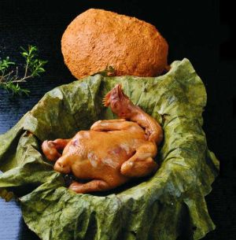
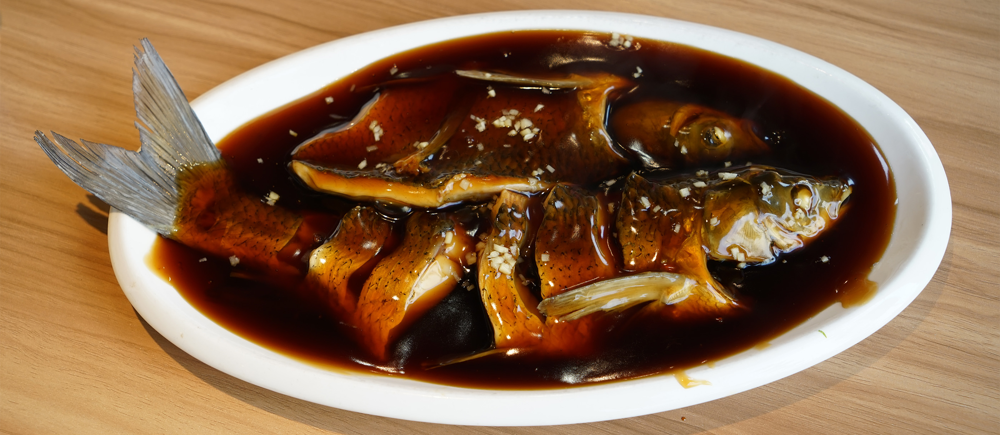
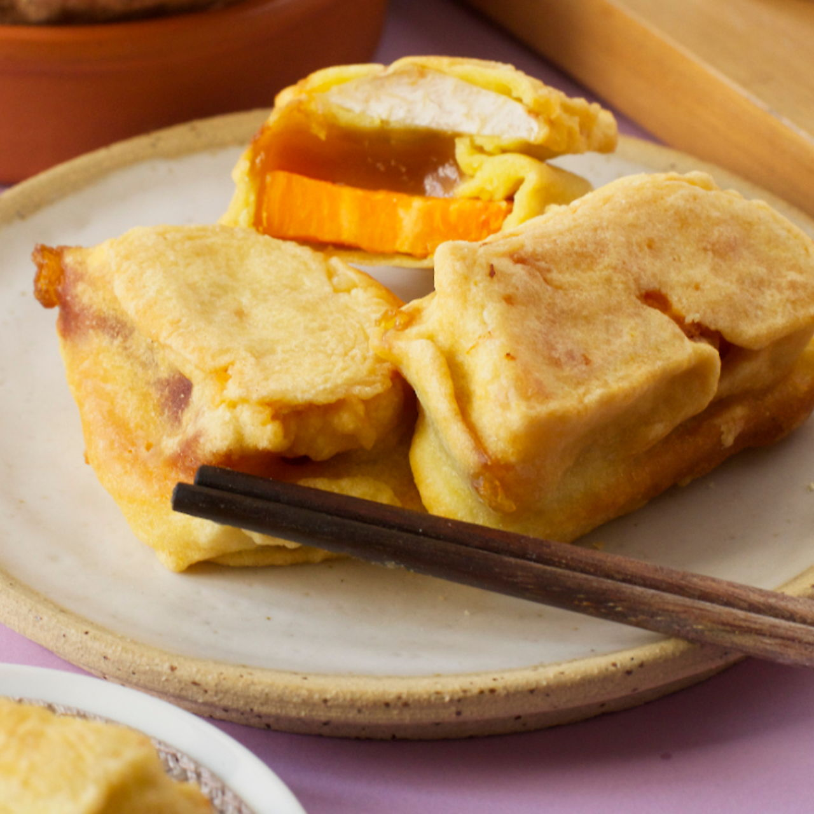

Beggar’s Chicken—known locally as “Hua Ji”—is one of Hangzhou’s most iconic dishes, with a legend dating back to the Southern Song Dynasty. The story goes that a beggar, too poor to buy cooking tools, wrapped a stolen chicken in lotus leaves, coated it in mud, and baked it in a hole in the ground. The result was tender, flavorful chicken—hence the name. Today, it’s a refined dish served in restaurants, but the core method (wrapping and slow-cooking) remains.Authentic Beggar’s Chicken uses a whole young chicken, stuffed with mushrooms, ham, bamboo shoots, and ginger to enhance flavor. The chicken is first marinated in rice wine and soy sauce, then wrapped in fresh lotus leaves (for aroma) and a layer of clay (to seal in moisture). It’s baked in an oven or charcoal fire for 2–3 hours till the clay hardens—breaking open the clay reveals the lotus leaf, which unfolds to release a rich, savory scent. The chicken is so tender it falls off the bone, and the stuffing soaks up the chicken’s juices.
Chicken Meat: Juicy, tender, and infused with the aroma of lotus leaves and soy sauce—no dryness, even in the breast.
Stuffing: Mushrooms and bamboo shoots absorb the chicken’s broth, adding umami; ham adds a salty, smoky note.
Lotus Leaf Aroma: The leaf imparts a fresh, earthy scent that balances the richness of the chicken.
Pairing: Serve with steamed rice to soak up the juices, or with a light vegetable stir-fry to cut through the heaviness.
Mid-Range Restaurants: 88–128 CNY/serving (whole chicken, enough for 3–4 people).
High-End Restaurants: 158–228 CNY/serving (uses free-range chicken, premium lotus leaves, and more stuffing).
Street Food Versions (Simplified): 30–50 CNY/small portion (chicken pieces wrapped in leaves, baked without clay).

West Lake Vinegar Fish is a classic Hangzhou dish that highlights the city’s love for fresh, local ingredients. It’s made with grass carp (caught from West Lake, though farmed carp is used today) cooked in a sweet-savory vinegar sauce. The key to the dish is the fish’s texture: it’s poached gently to stay tender, then coated in a glossy sauce made with rice vinegar, sugar, soy sauce, and ginger.Legend says the dish originated from a couple who sold fish by West Lake—after a tragedy, the wife created the sauce to express her sadness (vinegar for tears, sugar for sweet memories). Today, it’s a staple in Hangzhou restaurants, known for its clear, bright sauce and delicate fish. The best versions use fresh carp, which has a mild flavor that pairs perfectly with the tangy sauce.
Fish: Tender and flaky, with a clean, mild flavor—poaching keeps it moist and doesn’t overpower the fish’s natural taste.
Sauce: Sweet-savory with a bright vinegar tang—glossy and thick enough to coat the fish, but not sticky. Ginger adds a subtle warmth.
Texture Balance: The soft fish contrasts with the smooth sauce; a sprinkle of white sesame seeds adds a tiny crunch.
Local Restaurants: 48–78 CNY/serving (uses farmed grass carp, enough for 2 people).
Lakefront Restaurants: 98–158 CNY/serving (claims to use West Lake-caught fish, though true lake fish is rare).
Home-Style Eateries: 38–58 CNY/serving (simpler sauce, smaller portion).

Fried Glutinous Rice Cakes—“You Tiao Nian Gao” in local dialect—are a beloved Hangzhou street food, especially popular in winter. They’re made with glutinous rice flour (sticky rice flour) mixed with water to form a dough, which is shaped into thick slices, steamed, then fried till golden and crispy on the outside, chewy on the inside.In Hangzhou, you’ll find vendors selling them from small carts on street corners—they’re often served plain (sprinkled with sugar) or with a sweet soybean paste dip. The glutinous rice gives the cakes a satisfying chew, while frying adds a crispy crust that contrasts perfectly. They’re warm, filling, and cheap—ideal for a quick breakfast or snack on a cold day. Some vendors add red bean paste to the dough for a sweet twist, or scallions for a savory version.
Outside: Golden, crispy, and slightly oily (in a comforting way)—the fry adds a toasty flavor.
Inside: Chewy, soft, and slightly sweet (from the glutinous rice)—no grainy texture.
Sweet Versions: Sprinkled with white sugar or dipped in sweet soybean paste—adds a rich, creamy sweetness.
Street Vendors: 3–5 CNY per piece (sweet or savory); 10–15 CNY for 3–4 pieces (enough for a snack).
Breakfast Shops: 2–3 CNY per piece (smaller size, often served with soybean milk).
Specialty Dessert Shops: 8–12 CNY per piece (filled with red bean paste or matcha, premium version).